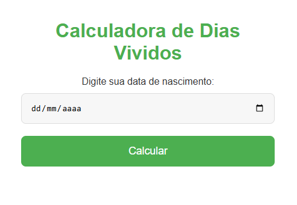
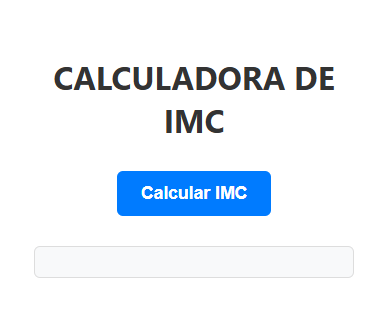
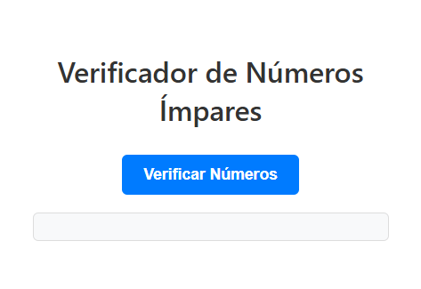
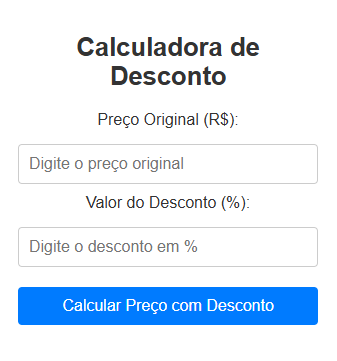
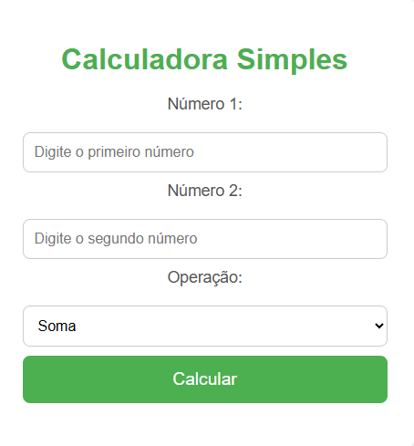
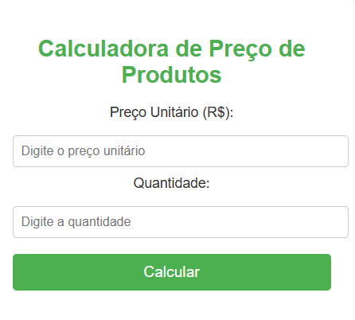

Meus Projetos VScode
Projeto - Manipulação de dados
Um projeto digital que fornece ao usuário uma estimativa precisa da quantidade de dias vividos, com base na data de nascimento informada.
A página realiza o cálculo de forma automatizada, oferecendo uma experiência interativa e intuitiva.

Ver Projeto
Projeto - Cálculo de IMC
Um projeto interativo que calcula e fornece informações detalhadas sobre o Índice de Massa Corporal (IMC) do usuário, com base nos dados inseridos, como peso e altura. Além do cálculo,
a plataforma pode oferecer interpretações dos resultados e orientações sobre a faixa de IMC correspondente.

Ver Projeto
Projeto - Números Ímpares
Um projeto simples e funcional em que o usuário insere dois valores numéricos, e o sistema processa essas informações para identificar e exibir, via terminal, se cada número digitado é par ou ímpar.
Ideal para praticar lógica condicional e manipulação de entradas no console.

Ver Projeto
Projeto - (PPT) Pedra/Papel/Tesoura
Um projeto interativo em que o usuário escolhe um dos objetos disponíveis (como pedra, papel ou tesoura) e participa de uma rodada contra a máquina, que gera respostas aleatórias a cada jogada. O sistema compara as escolhas e exibe
o resultado da partida, promovendo uma experiência dinâmica e divertida baseada em lógica condicional.
Ver Projeto
Projeto - Desconto de um produto
Um sistema funcional que solicita ao usuário o valor original de um produto e a porcentagem desejada para cálculo (como desconto ou acréscimo). Com base nas informações inseridas, o terminal realiza o processamento e
retorna o novo valor ajustado, facilitando simulações rápidas de preço de forma prática e eficiente.

Ver Projeto
Projeto - Calculadora
Um projeto prático no qual o usuário insere dois números e escolhe a operação matemática desejada (adição, subtração, multiplicação ou divisão). O sistema processa as informações e exibe no terminal o resultado exato da operação,
proporcionando uma ferramenta simples e eficaz para cálculos rápidos.

Ver Projeto
Projeto - Calculo do produto
Um sistema simples e direto em que o usuário informa o valor unitário de um produto e a quantidade desejada. A aplicação realiza o cálculo automaticamente e retorna, no terminal, o
valor total da compra, facilitando o controle e simulação de gastos de forma prática e eficiente.

Ver Projeto
üöÄ Destaques do Meu Portf√≥lio
E-COMMERCE
projeto desenvolvido para fins de E-COMMERCE. juntei minha paixão: intrumentos e desenvolvimento de aplicações
Ver Projeto
TecBlog
Descrição breve do projeto, suas funcionalidades e impacto.
Ver Projeto
LandingPage - Robô Distribuição
Esse projeto teve início após uma aula de automação logística no meu técnico, onde abriu minha mente ao perceber o quanto a tecnologia 4.0 e a automação é muito importante. Em aspectos de evolução, eficiência , gestão de tempo e organização de estoque.
Ver Projeto